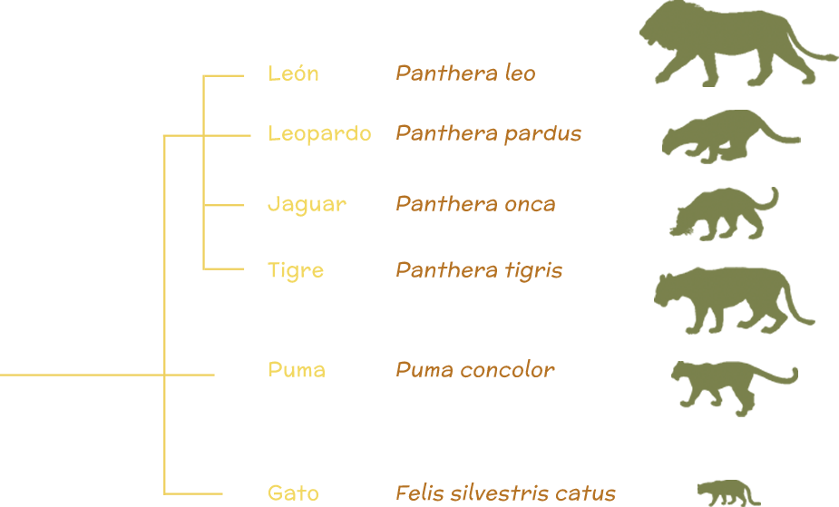

¿Qué es una especie?
En nuestro planeta existen muchas clases de plantas, animales, hongos, bacterias y otros organismos tan pequeños que son casi invisibles. Algunos son muy familiares y otros son poco conocidos. Cada una de las plantas y animales que podemos nombrar como por ejemplo: perro, gato, margarita, magnolia, maíz, rosa, piña, fresa, iguana verde, jaguar, lobo, cocodrilo de pantano, tortuga lora y sapo borracho son especies diferentes. Y también los seres humanos somos otra especie.
Todas las especies tenemos necesidades distintas para vivir, alimentarnos, crecer y reproducirnos. Unas especies dependen directamente de la energía del sol (las plantas), mientras que otras especies (los animales) dependemos de las plantas o de otros animales para obtener energía. Sin ellos no podríamos vivir.
Tenemos desde organismos pequeñísimos, que sólo se pueden ver con la ayuda de un microscopio hasta la gigantesca ballena azul, el animal más grande que ha existido en el planeta.

¿Iguales pero diferentes?
Los individuos de una misma especie de planta, animal, hongo o microorganismo tienen muchas diferencias de tamaño, forma, color, funcionamiento y comportamiento. Al igual que entre tus compañeros, amigos, parientes y hermanos, los hay altos, bajos, flacos, gordos, morenos y güeros.
Estas diferencias transmitidas de padres a hijos son fáciles de reconocer en la gran variedad de especies de plantas y animales domesticados como el maíz, jitomate, chiles, cempasúchil, noche buena, vacas, perros y gatos y también existen en todas las especies del planeta.


 Cempasúchil
Cempasúchil


Nativas y exóticas
De acuerdo a su distribución podemos distinguir dos grupos: nativas y exóticas.
Nativas

Especies nativas
Estas especies tienen su origen en México pero también pueden vivir en otros países (Ej: Águila real, Jaguar, Mariposa monarca, Ballena azul).

Especies endémicas
Algunas especies viven solamente en México y se conocen como endémicas (Ej: Teporingo, Vaquita marina). Pueden estar restringidas a un río, a una montaña, a una laguna, o a un estado.
Exóticas

Especies exóticas
Las especies exóticas son las que no se originaron en México. Algunas las trajimos para satisfacer nuestras necesidades de alimento (Ej: vacas, caballos, burros, gallinas, peces, trigo, plátano, café, abejas), o por otro motivos (Ej: eucaliptos, bugamibilias, jacarandas, tulipán africano, gatos y perros).
Especies invasoras
Algunas especies son introducidas de otros países a propósito o accidentalmente en barcos, aviones, carros, y pueden volverse un verdadero problema ya que compiten, depredan, parasitan, transmiten enfermedades o cambian el hábitat de las especies nativas
(Ej: ratas, cucarachas, palomas, pez diablo, plecos, lirios).
Nombres en latín
Cada especie recibe un nombre científico compuesto de dos partes. El nombre científico se escribe en latín para que en todos los países se utilice el mismo nombre. La primera parte es el género y nos señala al grupo al que pertenece. La segunda parte nos indica a qué especie pertenece. Son como tu apellido y tu nombre.
Por ejemplo, el jaguar se llama Panthera onca, el leopardo, Panthera pardus, el león africano se llama Panthera leo y el tigre Panthera tigris. El primer nombre nos indica que son parientes cercanos.
Por otro lado, el puma es Puma concolor y el gato es Felis silvestris catus. Aunque sabemos que éstos dos también pertenecen a la familia de los gatos, no están tan cercanamente emparentados como el jaguar, el leopardo y el león.
